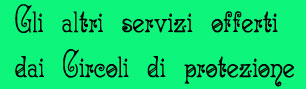
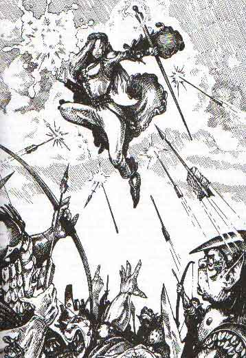
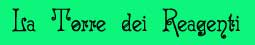
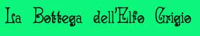
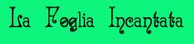
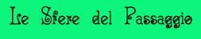
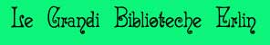

Si noti che tutti questi servizi sono usufruibili esclusivamente dagli iscritti ai vari Circoli e da coloro abbiano avuto un permesso speciale.


Si tratta di una piccola torre che funge da magazzino per tutti i componenti materiali necessari per lanciare le magie protettive offerte dalla scuola. Al piano terra si trova lo spaccio dove è possibile acquistarli tramite un catalogo al bancone. I reagenti venduti sono i seguenti (si noti che alcune gemme comuni non sono vendute ma sono acquistabili presso le normali gioiellerie presenti nella città di Rexin) :
Prisma Minerale (Read Magic): Si tratta di un purissimo prisma minerale di quarzo che e' stato tagliato e ripulito per poter essere usato senza interferenze, il peso è di 1/2 libbra è contenuto in un sacchetto di velluto blu e costa 120 querce.
Molla d'argento (Askepranduril's Lesser Contraspell): E' una grossa e pesante molla d'argento finemente lavorata con incise rune protettive elfiche. Il peso è di 1/2 libbra ed è contenuto in un sacchetto di lino, il costo è di 63 querce.
Polvere di argento (Protection from Evil / 15' radius): E' una purissima polvere di argento contenuta in un piccolo corno svuotato e chiuso con un tappo di cuoio nero. Nel corno sono contenute 10 dosi di questa polvere. Il peso del corno è di 2 libbre e il costo è di 60 querce.
Polvere di ferro (Protection from Good / 15' radius): E' una purissima polvere di ferro contenuta in un piccolo corno svuotato e chiuso con un tappo di cuoio bianco. Nel corno sono contenute 10 dosi di questa polvere. Il peso del corno è di 2 libbre e il costo è di 15 querce.
Polvere di ossidiana (Protection from Law): E' una purissima polvere di ossidiana contenuta in un piccolo corno svuotato e chiuso con un tappo di cuoio blu. Nel corno sono contenute 10 dosi di questa polvere. Il peso del corno è di 2 libbre e il costo è di 150 querce.
Polvere di vetro (Protection from Chaos): E' una purissima polvere di vetro contenuta in un piccolo corno svuotato e chiuso con un tappo di cuoio rosso. Nel corno sono contenute 10 dosi di questa polvere. Il peso del corno è di 2 libbre e il costo è di 50 querce.
Guscio di lumaca placcato d'argento (Vital Coverage): Si tratta di 10 gusci di lumaca gigante placcati d'argento e con incise alcune rune protettive. Il peso di tutti i gusci è pari ad 1 libbra ed il loro costo è di 35 querce.
Mercurio liquido (Tenser Floating Disk): Un dosatore in lattice che contiene 10 dosi di mercurio liquido. Facendo una certa pressione sul lato superiore dal dosatore fuoriesce una grossa goccia di mercurio. Il dosatore è ermetico e non si ricarica. Il peso del dosatore è pari ad 1 libbra ed il suo costo è di 135 querce.
Piccolo campanellino di rame e cordicella di argento (Alarm): E' un piccolo campanellino di rame al quale è avvolto un sottole filo di argento. Sul campanellino è incisa la frase elfica :"Arlinir ci protegga". Il peso di tutto è pari a 1 libbra e il costo è di 12 querce.
Amuleti Protettivi (Protective Amulet): Si tratta di grossi amuleti di metalli preziosi a forma di foglia, riccamente adornati e con incisioni runiche elfiche. Il loro materiale e valore cambia a seconda della potenza dello spell da cui devono difendere. Pesano tutti 1/2 libbra.
| LIVELLO PROTEZIONE | COSTO di vendita | MATERIALE |
| 1° Livello | 18 querce | Rame |
| 2° Livello | 40 querce | Bronzo |
| 3° Livello | 70 querce | Argento |
| 4° Livello | 140 querce | Electrum |
| 5° Livello | 280 querce | Oro |
| 6° Livello | 560 querce | Platino |
| 7° Livello | 1120 querce | Platino e quarzo |
| 8° Livello | 2250 querce | Platino e ametista |
| 9° Livello | 4450 querce | Platino e rubino |
Scatola di cibo secco (Protection from Hunger and Thrist): E' una scatola di legno nella quale sono conservati alcuni pezzetti di carne essiccata e trattata alchemicamente per durare ed essere commestibile e utili ai fini magici per lungo tempo, inoltre contiene una piccola borraccia con acqua da accompagnare alla carne, anche in questa è dissolto un sale alchemico conservante. La durata della confezione è pari ad 1 anno e il peso della scatola è di 5 libbre ed è utile per 5 dosi. Il costo è di 35 querce.
Piccolo incensiere di bronzo e coni di incenso (Protection from Vermin): E' uno speciale incensiere con pietre focaie incorporate e carboni incendiari, è in grado di bruciare molto rapidamente il cono di incenso in esso posto. E' fornito anche di una tracolla in cuoio. Può essere riutilizzato, il suo peso è di 2 libbre e il suo costo è pari a 85 querce. I coni di incenso sono venduti in una particolare scatola di rame che è possibile agganciare alla tracolal dell'incensiere. La scatola contiene 5 dosi (coni) per un peso complessivo di 5 libbre e un costo di 100 querce.
Torcia con polvere alchemica (Human Torch): E' una speciale torcia dal peso di 1 libbra che sulla sommità ha incastrata una palla di cera molto spessa. All'interno della palla di cera si trova una speciale polvere pirica di natura alchemica capace ci andare in combustione a contatto con l'aria. Quando il mago spacca la palla di cera si sprigiona una piccola fiamma in grado di accendere la torcia. Il costo di ogni torcia è pari a 12 querce.
Pasticcio di uova conservate (Nahal's Nonsensical Nullifier): In un barattolo di rame come tappo a vite è contenuto un pasticcio di uova. Le uova sono state impastate con una polvere alchemica neutra che ne permette la conservazione utile per la magia per 1 anno (inoltre non provocheranno cattivo odore). Il barattolo contiene 5 dosi, pesa 1 libbra e ha un costo di 12 querce.
Tela di ragno e cotone (Filter): In un drappo di cotone rettangolare è cucito all'interno una matassa di tela di ragno. I drappi sono venduti singolarmente hanno un peso pari a 1/5 di libbra e costano 1 quercia l'uno.
Zampa imbalsamata di Ragno Gigante (Resist Paralisis): E' la zampa imbalsamata di un Ragno Gigante trattata con prodotti alchemici per non puzzare e per durare per molti anni, Inoltre è piegata un modo da occupare il minor spazio possibile. Il suo peso è pari a 2 libbre e costa 13 querce.
Bottiglietta di vetro (Sonic Barrier / Minor Spell Invulnerability): E' una piccola bottiglietta di vetro vuota avvolta e cucita in uno speciale panno imbottito in grado di attutire gli urti. Il peso è pari a 1 libbra e il costo è di 7 querce.
Campanello d'argento (Dispel Silence): E' una grosso campanello di argento intarsiato con incisioni di foglie elfiche. Il peso è pari a 1 libbra e il costo è pari a 55 querce.
Pietre di fiume (Protection from Enchantment): Sono piccole gemme dal colore verde chiaro e trasparenti, sono tipiche dei fiumi della Foresta Elfica. Sono vendute singolarmente, hanno un peso pari a 1/10 di libbra e il costo è pari a 13 querce.
Spolverino di piume di uccello (Protection from Housework): E' uno spolverino di piume di uccello legate fra loro da piccolissimo filo d'argento. Ha un peso pari a 1/5 di libbra e il costo è pari a 2 querce.
Drappo di veste clericale (Protection from Paralisis): Si tratta di drappi di una veste clericale di un sacerdote di Arlinir avvolti attorno a una piccolo staffa di rame, i drappi sono cuciti in modo da essere facili da strappare. Alla staffa sono avvolti 15 drappi di veste. Il peso è pari a 2 libbre e il costo è di 75 querce (nel costo e' compresa una piccola donazione di 15 querce al culto di Arlinir).
Martelletto da fabbro in argento (Armour Enanchment): E' un piccolo martelletto da fabbro in argento avvolto in un panno di cuoio. Ha un peso pari a 2 di libbre e il costo è pari a 35 querce.
Polvere di gemme (Rune True): E' una purissima polvere di gemme preziose contenuta in un piccolissimo sacchetto di seta blu. Nel sacchetto è contenuta 1 dose di questa polvere. Il peso del sacchetto è di 1/5 di libbra e il costo è di 120 querce.
Tegola di argilla e zampe di ragno (Thrasne Magical Mire): E' una particolare tegola di argilla nel cui impasto sono state versate diverse zampe di ragno prima della cottura. Pesa 1/2 libbra è avvolta in un panno di cotone e venduta al costo di 3 querce.
Piccolo scudo (Turn Lesser Quasi-Elemental): E' uno scudo d'oro in miniatura con inciso l'effige del Reame Erlin (la corona attraversata da un albero). Pesa 1/2 libbra ed è venduto al costo di 13 querce.
Pezzo di pirite purissima (Weapon Protector): E' una purissima roccia di pirite venduta avvolta in un panno di lino. Pesa 1 libbra ed è venduto al costo di 12 querce.
Lazzo di filo di rame (Band of Mist): E' un lungo lazzo di rame puro dal peso di 1/2 libbra e dal costo di 6 querce.
Prisma di quarzo puro (Energy Prism): E' un purissimo prisma di quarzo azzurro venduto in un sacchetto di velluto azzurro. Pesa 1/2 libbra ed è venduto al costo di 30 querce.
Sfera di ferro (Iron Mind): E' una piccola sfera di ferro puro. In un sacchetto di cuoio sono contenute 5 sferette. Il peso del sacchetto è di 1 libbra e il suo costo è di 5 querce.
Polvere di diamante (Non detection): In un sacchetto di velluto dorato è contenuta questa purissima polvere di diamante sufficiente per 1 dose. Il peso del sacchetto è di 1/5 libbra e il suo costo è di 350 querce.
Miscela di sali rari (Protection from Amorph): E' una mistura di sali minerali rarissimi dosata e contenuta in un piccolo corno svuotato e chiuso con un tappo di cuoio viola. Nel corno sono contenute 10 dosi di questa mistura. Il peso del corno è di 2 libbre e il costo è di 50 querce.
Pezzo di plate mail (Invisible Mail): E' un frammento di una corazza di piastre di nuova costruzione. Da una corazza possono essere ottenuti 35 frammenti. In un sacchetto di cuoio sono contenuti 5 pezzi di corazza. Il peso del sacchetto è di 7.5 libbre e il suo costo è di 115 querce.
Polveri di gemme preziose (Lesser Sign of Sealing): In un cofanetto d'argento circolare chiuso in maniera ermetica con un tappo a vite si trovano le poveri per questa magia divise in 5 sezioni in modo tale da non mescolarsi. Per ogni polvere è contenuta 1 dose. Le polveri sono di diamante (freddo), rubino (fuoco), smeraldo (acido), perla (sonic disruption), zaffiro (elettricità). Il cofanetto pesa 1 libbra e costa 580 querce. E' possibile inoltre farlo riempire delle poveri usate, ogni dose (di qualsiasi tipo) costerà 115 querce.
Pezzo di guscio di tartaruga (Protection from Normal Missile): E' una pezzo di guscio di tartaruga. In un sacchetto di cuoio sono contenute 5 pezzi. Il peso del sacchetto è di 2 libbra e il suo costo è di 15 querce.
Fango fresco (Grey Elves Protection from Stoning): In un barattolo di rame come tappo a vite è contenuto un del fango fresco. Al fango è stato aggiunto uno speciale liquido alchemico che ne impedisce l'essiccamento permettendone la conservazione utile per la magia. Il barattolo contiene 5 dosi, pesa 1 libbra e ha un costo di 15 querce.
Polvere di quarzo (Astral Secure Room): E' una purissima polvere di quarzo contenuta in un piccolo corno svuotato e chiuso con un tappo di cuoio azzurro. Nel corno sono contenute 10 dosi di questa polvere (per un valore pari a 100 corone). Il peso del corno è di 2 libbre e il costo è di 125 querce.
Perle azzurre (Little Forest Magical Drain Shield): Sono delle particolari perle dal colore azzurrino, sono tipiche dei fiumi della Foresta Elfica. Sono vendute singolarmente, hanno un peso pari a 1/10 di libbra e il costo è pari a 120 querce.
Reagenti vari (Protection from School of Magic): Sono dei reagenti di vario tipo che proteggono dalle varie scuole di magia, sono venduti singolarmente, e i tipi sono i seguenti (tutti per 1 dose):
| Reagente | Scuola Protetta | Costo | Peso in libbre |
| Muta di rettile | Alteration | 3 querce | 1/2 |
| Anello d'oro | Conjuration | 25 querce | 1/10 |
| Specchietto d'argento | Divination | 20 querce | 1 |
| Elmo completo miniatura | Enc./Charme | 8 querce | 1 |
| Scudo argento miniatura | Invocation | 30 querce | 1 |
| Guanto velluto blu | Illusion | 10 querce | 1/2 |
| Petali di rose biache | Necromancy | 3 querce | 1/10 |
Pelliccia di orso gufo (Protection from Cold): E' un pezzo di pelliccia di orso gufo imbalsamato in modo da non essere deperibile. In sacchetto di cuoio sono contenute 5 pezzi di pelliccia. Il peso del sacchetto è di 3 libbre e il suo costo è di 75 querce.
Sfera di resina (Protection from Electricity): E' una piccola sfera di resina vegetale che non conduce alcun genere di elettricità. In un sacchetto di cuoio sono contenute 5 sferette. Il peso del sacchetto è di 1 libbra e il suo costo è di 12 querce.
Pezzo di stoffa trattata (Protection from Fire): E' un drappo di stoffa trattato con unguento alchemico in modo tale da non essere incendiabile. i drappi sono avvolti attorno a una piccolo staffa di rame e sono cuciti in modo da essere facili da strappare. Alla staffa sono avvolti 15 drappi di stoffa. Il peso è pari a 2 libbre e il costo è di 60 querce.
Protective Ring of Abjuration (Ring of Protection): E' un bellissimo anello di oro e platino intrecciati a cordoni e nella cui parte interna sono incise rune elfiche protettive. E' prodotto dai migliori artigiani grey elves ed è venduto ad un costo pari a 630 querce.
Acqua santa e argento (Thrasne Golden Circle of Protection): Si tratta di una speciale boccetta di rame che contiene acqua santa di Arlinir in cui è stata disciolta della finissima polvere di argento. La boccetta ha un peso pari a 1 libbra e il suo costo (comprensivo di una donazione di 5 querce al culto di Arlinir) è di 100 querce.
Sfera di pelle (Protection from Vapor): Si tratta di una sfera di pelle vuota al suo interno che costituisce una sorta di palla ermetica. Il peso della sfera è di 1 libbra e il suo costo è di 7 querce.

All'interno del complesso della scuola si trova anche una bottega (gestita dalla Scuola stessa) ove i maghi possono acquistare gli oggetti non magici per costoro prodotti. Si tratta di oggetti particolari difficilmente reperibili altrove. I prodotti venduti sono i seguenti :
Le Tuniche Ufficiali dei Circoli di Protezione
Si tratta di una tunica leggera e comoda la cui parte inferire si apre leggermente in una sorta di piccola gonnella. La tunica non ha cappuccio. La tunica è di seta elfica e indipendentemente dal Circolo di appartenenza è adornata da bordi d'argento intarsiato e sulla parte del petto da incisioni d'argento raffiguranti rune difensive. Esiste però una versione della tunica fatta di uno speciale tessuto elfico chiamato Eldron. questo tessuto è filato in modo da risultare particolarmente resistente ed prodotto mediante l'utilizzazione della migliore seta elfica e di tela di ragno gigante trattata alchemicamente, questo tessuto fa si che colui che indossi la tunica abbia una classe armatura iniziale pari ad AC 9, il costo aggiuntivo per tale tessuto è una somma di 150 querce.
| Circolo di appartenenza | Colore della tunica | Costo della tunica |
| Circolo della Magia Protettiva | Bianca | 80 querce |
| Circolo della Corteccia | Azzurro chiaro | 100 querce |
| Circolo della Barriera Verde | Verde chiaro | 120 querce |
| Circolo delle Foglie Sacre | Bronzo | 150 querce |
| Circolo delle Rune Protettive | Argento | 200 querce |
| Supremo Circolo della Foresta | Oro | 300 querce |
Grembiule da Laboratorio: E' uno speciale grembiule fatto di cuoio trattato in laboratorio con guano di pipistrello, acido e mercurio. Il grembiule copre il corpo dal collo alle caviglie modo da proteggerlo dalle schegge e dagli spruzzi corrosivi nel laboratorio. Chi lo indossa ottiene un +1 ai tiri salvezza contro attacchi da acido o fuoco. I tiri salvezza del grembiule sono i seguenti : Acido 9, Fuoco Magico 6, Fuoco Normale 4. Il costo del grembiule è pari a 20 querce e il suo peso è di 3 libbre.
Bilancia di Electrum: E' uno strumento di precisione in grado di pesare con accuratezza tutti i pesi da 1/16 di libbra a 10 libbre. E' stata creata in electrum per garantirne la massima durata e affidabilità. I due piatti della bilancia sono a forma di grosse foglie mentre il copro è a forma di albero. Il costo è pari a 50 querce e il suo peso è di 5 libbre.
Boccette del mago Erlin: Sono particolari boccette di vetro con un tappo a vite di rame in aggiunta della chiusura in sughero. Inoltre sono inserite e cucite in particolari sacchetti di cuoio imbottito appositamente creati per loro al fine di proteggerle nel migliore dei modi (bonus di +2 ai tiri salvezza contro rottura). Il costo è pari a 7 querce e il suo peso è di 1 libbre (piene di liquido).
Clessidre di precisione: Sono delle clessidre di precisione per misurare il tempo. Sono riccamente adornate e alloggiate in un custodia di legno imbottita. Esistono di diverse dimensioni:
| DURATA | COSTO | PESO |
| 1 minuto | 5 querce | 1 libbra |
| 10 minuti | 10 querce | 1 libbra |
| 30 minuti | 15 querce | 2 libbre |
| 1 ora | 30 querce | 3 libbre |
| 3 ore | 50 querce | 5 libbre |
Contenitore di metallo per libri: E' un contenitore di metallo a scomparsa (rame con anima di acciaio) per un libro (volume di 200 pagine massimo) che lo protegge dagli urti dando un bonus di + 2 a tutti i tiri salvezza del libero. Il contenitore inoltre e' dotato di un ottimo lucchetto ( - 5 % open lock) che si chiude con una piccola chiave di bronzo. Tentare di aprirlo con la forza potrebbe causare gravi danni al libro e richiede comunque molto tempo. Sul contenitore possono essere incise immagini della Foresta Elfica. Il peso del contenitore è di 4 libbre e il costo è pari a 120 querce.
Custodia per pergamena: E' un cilindro di legno con tappo a vite con interno foderato in lamina di bronzo. Può alloggiare fino a tre pergamene avvolte su se stesse. E' dotato anche di una comoda tracolla in cuoio. Il peso del contenitore è di 3 libbre e il costo è pari a 50 querce.
L'Albero della Luce : E' una speciale lanterna alchemica molto diffusa a Rexin. E' formata da una sfera di cristallo avvolta da una struttura ad albero. In pratica è una sorta di alberello di bronzo i cui rami avvolgono la sfera di cristallo e le cui radici costituiscono la base. La sfera contiene una speciale polvere alchemica capace di divenire luminosa a contatto con l'ossigeno. Per questo motivo quando viene aperta una piccola apertura nella sfera questa si illumina di una luce dai riflessi bluastri in grado di illuminare chiaramente in un raggio di 9 metri. La lampada accesa emana un caratteristico odore di mirto bruciato molto amato dagli elfi. La polvere nella lampada può essere utilizzata 30 volte prima di terminare e la durata di ogni utilizzo è di massimo 24 ore. Esiste anche un porta lampada a sospensione a forma di edera con un gancio dal quale fare pendere la luce. Il peso del contenitore è di 4 libbre e il costo è pari a 15 querce per il contenitore che può essere riutilizzato e 55 querce per la sfera di polvere alchemica.

E' il negozio di oggetti magici gestito dalla scuola di magia, è possibile anche vendere alla Scuola oggetti magici che le interessino. Il valore a cui questi sono acquistati e normalmente l'80% del loro valore di mercato. La scuola ha un fondo mensile di 10000 querce per l'acquisto di oggetti magici provenienti dall'esterno (i profitti trasformati in crediti con la scuola non sono soggetti ad alcuna limitazione. Il prezzo va versato al momento della stipulazione dell'ordine di acquisto dell'oggetto anche se sarà necessaria un'attesa prima della consegna.

La città di Rexin è protetta da un potente rituale di Alta Magia (magia solitamente cooperativa che utilizza ancora formule e sistemi in parte dell'Antico Metodo) che impedisce qualsiasi forma magica di trasporto che non sia fisico (come Teleport, Dimensional Door) o che utilizzi il passaggio attraverso altri piani di esistenza (come Eterealness) e che si estende per alcune miglia intorno la città. Tali magie se lanciate da dentro la zona protetta o da qualsiasi luogo ma dirette nella zona protetta semplicemente falliranno. Per questo motivo gli Elfi Grigi hanno costruito una struttura sui monti Roar chiamata le Sfere del Passaggio dove sono posizionati tutti i pattern che possono portare oltre il confine del Reame Erlin. A nessuno è consentito infatti possederne altri. Per raggiungere le Sfere del Passaggio da Rexin occorrono normalmente due giorni di marcia, bisogna infatti seguire un sentiero di 12 km. nella Grande Foresta Elfica (24 punti viaggio in condizioni atmosferiche normali) dove si trova una locanda chiamata L'ultima dimora e dove è possibile ottenere una camera accogliente e un ottimo pasto caldo per una cifra di 1 quercia al giorno. Da questo punto occorre proseguire sulla montagna attraverso un sentiero tortuoso per circa 6 km. (18 punti viaggio in condizioni atmosferiche normali). Raggiunto un piccolo altopiano si trova la struttura formata da una torre di guardia (con relativa guarigione dell'esercito reale Erlin dalla quale si staccano le scorte che accompagnano i forestieri quando necessario a Rexin), un edifico della scuola dei Circoli di Protezione dove dimorano i maghi che effettuano il trasporto con lo spell Ilvonor pattern teleport e dove sono registrati tutti i movimenti della struttura. In pratica i Circoli di Protezione gestiscono solo questo servizio che appartiene, in realtà, alla Corona Erlin. Vi sono poi alcuni piccoli edifici sferici di granito bianco, protetti da grossi e pesanti portali di ferro le cui chiavi sono in possesso del responsabile dei Circoli di Protezione. All'interno di ognuna di queste sfere si trova un determinato pattern, i pattern conducono presso alcune ambasciate Erlin nel Sud-Arelia, per poter infatti entrare nel Reame Erlin occorre infatti possedere l'iniziale visto dell'ambasciata. Il servizio di trasporto è effettuato con pattern magici che non si usurano al lancio della magia. Il costo del servizio è pari al costo della magia (secondo le regole del Circolo del Potere 193 querce fino a 250 libbre) + una tassa unica di utilizzo dei due pattern pari a 25 querce. Normalmente non ci sono tempi di attesa per essere trasportati anche perchè il numero dei viaggiatori autorizzati è estremamente esiguo. I luoghi che è possibile raggiungere dalle varie sfere sono :
1) Ambasciata Erlin presso il Regno di Tarsis, nella città di Tarsis
2) Ambasciata Erlin presso la Repubblica Silveriana, nella città di Silveria
3) Ambasciata Erlin presso il Ducato di Southland, nella città di Sinkros
4) Ambasciata Erlin presso il Granducato di Trisengard, nella città di Artas
5) Ambasciata Erlin presso il territorio Loderin, nella città di Littleforest
